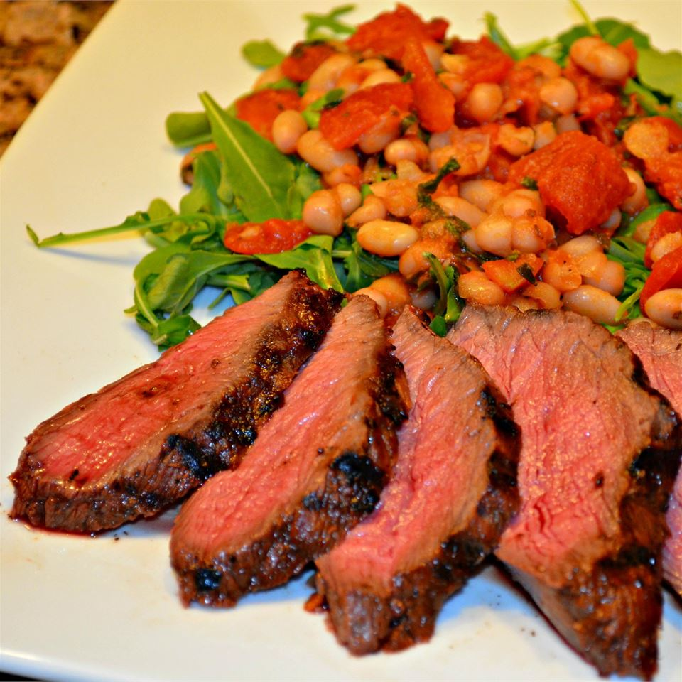

Flank Steak

Description
I love Thai food, and in particular red curry beef, which is basically chunks of beef stew meat cooked slowly in a spicy, aromatic red curry sauce. Inspired by this classic recipe, I decided to see if the same sort of flavors could be turned into a marinade for flank steak. The results knocked my socks off.
Ingredients
- ¼ cup seasoned rice vinegar
- 3 tablespoons fish sauce
- 1 tablespoon freshly grated ginger
- 3 cloves garlic, crushed
- 1 teaspoon hot sauce
- 1 teaspoon red curry powder
- ½ teaspoon red curry paste
- 1 (1 1/2-pound) flank steak
- 1 bunch fresh basil
Steps
- Whisk rice vinegar, fish sauce, grated ginger, garlic, hot sauce, red curry powder, and red curry paste in a shallow dish. Set aside.
- Puncture flank steak several times with a fork and place in the vinegar mixture. Cover and marinate at room temperature for 1 hour.
- Preheat an outdoor grill for high heat, and lightly oil the grate.
- Place steak on the grill and basil on top of steak. Grill steak for 6 minutes. Remove basil, turn meat over, and place basil back on top of steak. Cook the steak until it begins to firm and is hot and slightly pink in the center, about 6 more minutes. An instant-read thermometer inserted into the center should read 130 degrees F (54 degrees C).